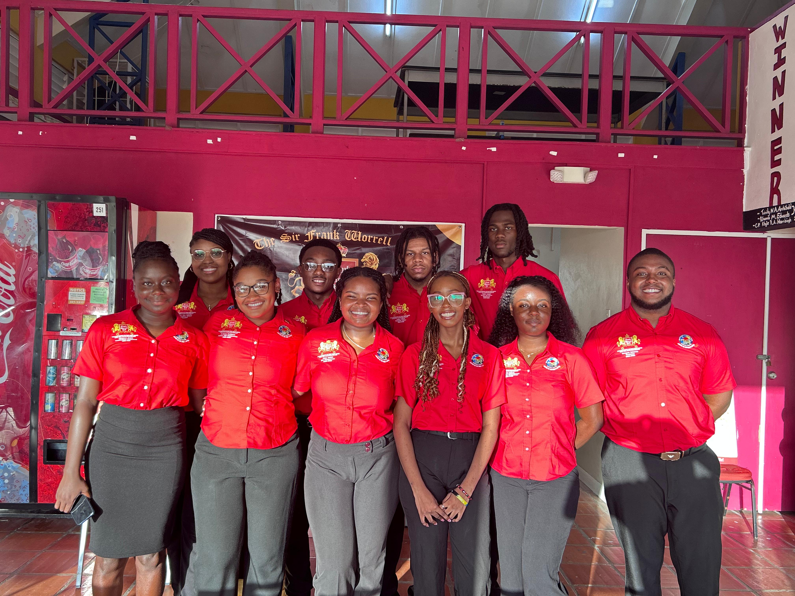

Official Election Portal
Sir Frank Worrell Hall
Elections 2026
Transparency. Leadership. Representation.
Official Election Portal
Transparency. Leadership. Representation.
This portal is the official source of campaign information for the 2026 Sir Frank Worrell Hall Student Council Elections. It is maintained by the Electoral Commission to ensure every resident has fair and equal access to candidate materials.
Browse candidate profiles, read manifestos, watch campaign videos, and learn about each council position before you cast your vote.
All candidate profiles are presented in a uniform format to promote fairness and transparency across the election process.

Jump directly to the section you need.
Key milestones for the 2026 election cycle.
Everything you need to know about voting and eligibility.
Have a question, suggestion, or concern about the election process? Submit anonymously.